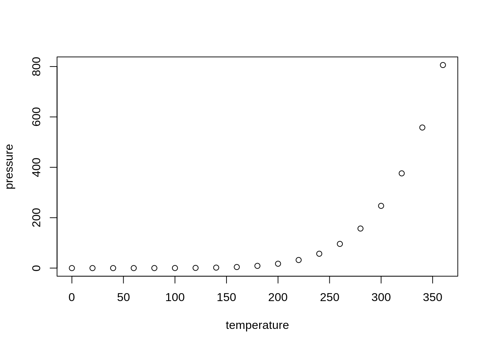

The goal of NeuralNetworksReadingGroup is to …
What is special about using README.Rmd instead of just README.md? You can include R chunks like so:
summary(cars)
#> speed dist
#> Min. : 4.0 Min. : 2.00
#> 1st Qu.:12.0 1st Qu.: 26.00
#> Median :15.0 Median : 36.00
#> Mean :15.4 Mean : 42.98
#> 3rd Qu.:19.0 3rd Qu.: 56.00
#> Max. :25.0 Max. :120.00You’ll still need to render README.Rmd regularly, to keep README.md up-to-date.
You can also embed plots, for example:

In that case, don’t forget to commit and push the resulting figure files, so they display on GitHub!